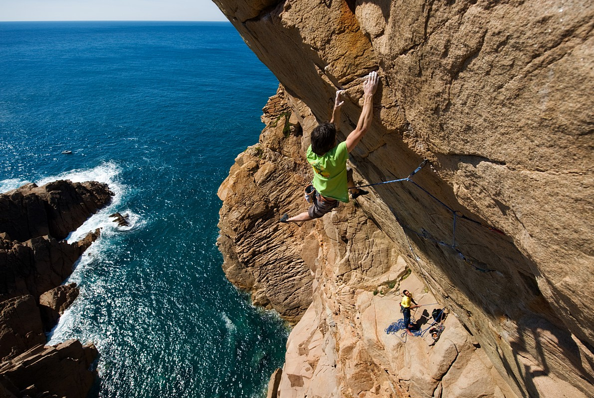
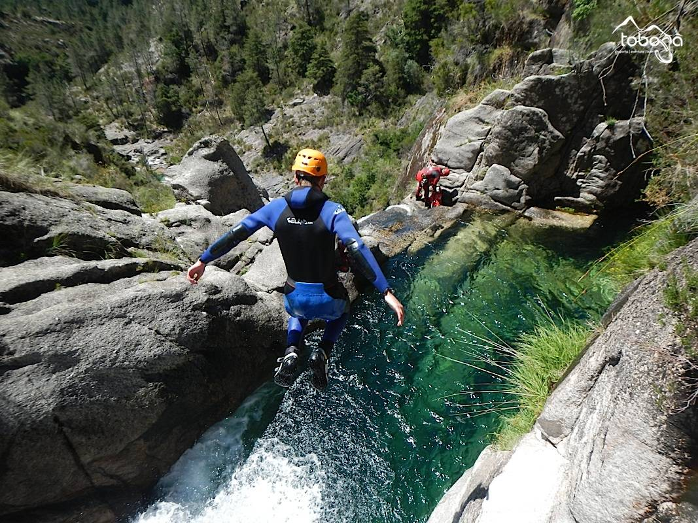
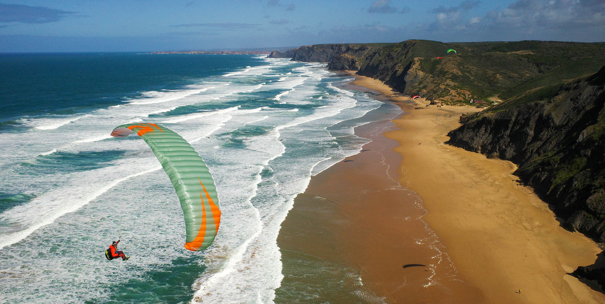
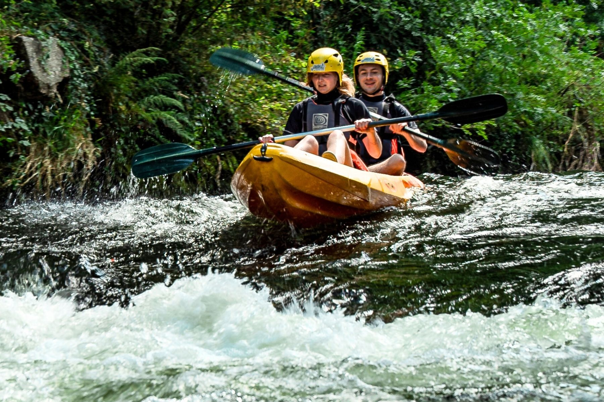
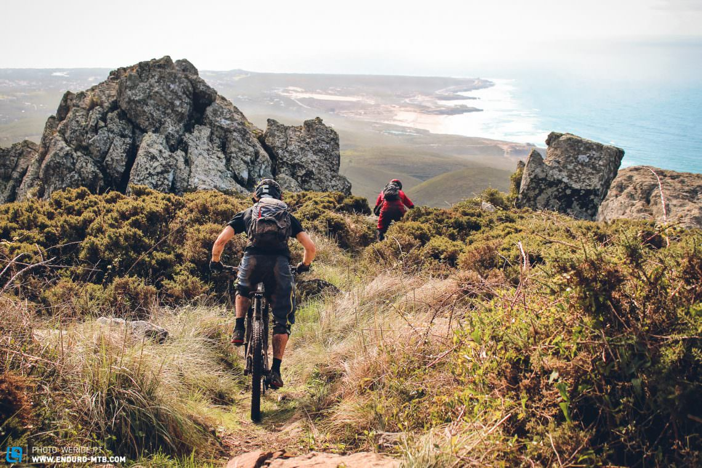

Rock Climbing
Scale dramatic limestone cliffs and granite formations with routes for beginners to expert climbers.

Canyoning
Navigate mountain streams through rappelling, sliding, and jumping in pristine natural gorges.

Paragliding
Soar above coastal cliffs and mountain valleys with tandem flights and courses for all levels.

Zip-lining
Experience thrilling zip-line courses through forest canopies and across dramatic river valleys.

Kayaking & Rafting
Paddle through river rapids, explore sea caves, and discover hidden coastal grottos by kayak.

Mountain Biking
Ride challenging trails through forests, mountains, and coastal paths with stunning panoramic views.